Vi håller
Södermalm
rullande.
Snabb service, ärliga priser och cyklar att låna när din
egen står på lyft. Ekorren har lagat cyklar på
Skånegatan sedan 2011.
Öppet idag 10-18

Snabb service, ärliga priser och cyklar att låna när din
egen står på lyft. Ekorren har lagat cyklar på
Skånegatan sedan 2011.
Öppet idag 10-18

Grundservice, bromsar, växlar, och kedja - klart samma dag i de flesta fall.
Se priser →Skånegatan 61, Stockholm
10:00-18:00
11:00-15:00